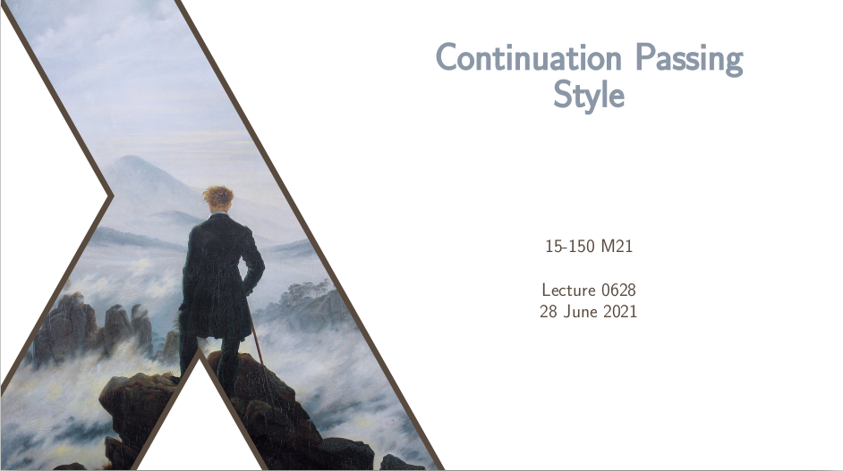
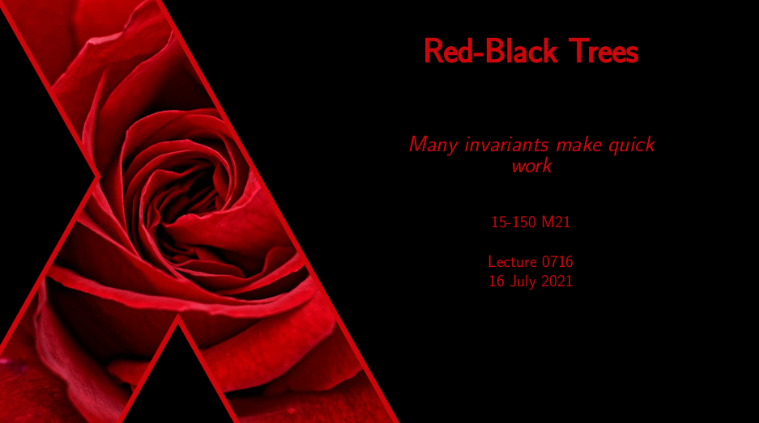
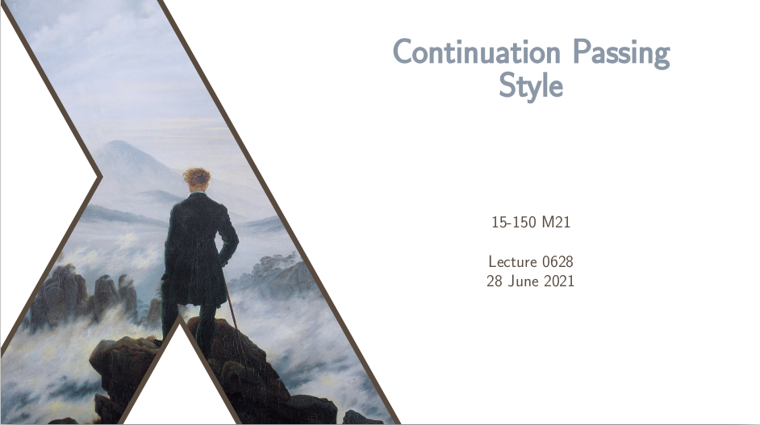
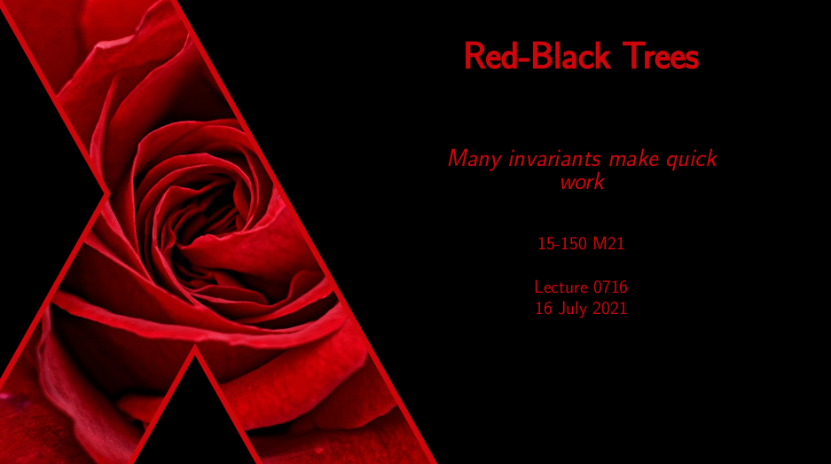

15-150 Principles of Functional Programming
Instructor (Summer 2020, Summer 2021)
Head Teaching Assistant (Spring 2018, Summer 2018, Fall 2018)
Teaching Assistant (Summer 2017, Fall 2017, Spring 2020)
15-150 Principles of Functional Programming is a core course in the CMU Computer Science curriculum, typically taken by first- and second-year undergraduates studying computer science, mathematics, and related fields. In the course, we teach students the theory and practice of functional programming: recursion, structural induction, evaluation and extensional equivalence, inductive datatypes, parallel and sequential cost analysis, use of higher-order functions, continuation passing style, exception-handling, modular programming, parallel algorithm design, two-player games & alpha-beta pruning, and lazy programming. The course is taught entirely in Standard ML. One of the challenges of teaching functional programming (especially at an introductory level) is that most students coming into the course have never done any functional programming, and do not know how to "think functionally". So the professors and teaching assistants for this course must guide students in learning how to think in a wholly new way, and approach problems from a new mindset.
Course WebsiteTeaching Assistant (2017, 2018, 2020)
I served as a teaching assistant for this course six times, three of them as the "Head TA". At its largest, this course has nearly 400 students and 30 or more TAs, and so the job of the Head TA is to coordinate the activities of the course staff and make sure the students' needs are being met. Unlike most courses, the homework assignments in 150 are made by the TAs, so as Head TA I would supervise groups of several TAs as they revised a homework assignment (and wrote new problems, as needed) and developed test cases for "auto-grading" the student's code submissions. I also oversaw the grading process after the homework was due, and was ultimately responsible for addressing any grading mistakes or disputes. As Head TA, I conducted interviews and decided which people to hire as TAs, and it was my job to look after the course staff, ensure they were able to fulfill their duties, and that they were equipped to make the course as excellent as possible. All five semesters I was a TA, I was responsible for holding weekly office hours, and I taught an hour-and-a-half lab session each week to review lecture material.
The instructors I worked for were Dilsun Kaynar, Mike Erdmann, Steve Brookes, Frank Pfenning, and Stefan Muller.
Instructor (2020, 2021)
I taught 15-150 as the primary instructor in the first summer term of 2020 (with Dilsun Kaynar as my co-instructor). My main duties included delivering the lectures (I delivered 22 of the course's 28 lectures), coordinating the TA staff (we had 23 TAs that semester), and attending to our 100+ students. The summer term is only six weeks long, so, in order to cover the same content as the sixteen-week semester, everything moves at an accelerated pace: there is a lecture every day and multiple homework assignments due each week. Additionally, the summer 2020 term was fully remote due to the COVID-19 pandemic, so a substantial amount of effort was spent trying to adjust to the online format and compensate for its numerous shortcomings. For instance, some of our TAs regularly taught lab at 10:30pm eastern time (and held office hours as late as 1:00am) to accommodate students taking the course in time zones on the other side of the world. Thanks to incredible dedication from everyone (especially the excellent staff of TAs), we managed to pull off a great semester of 15-150 in perhaps the most trying of circumstances.
I returned to teach 15-150 once again for the Summer 2021 term, as the sole instructor (assisted by 15 excellent TAs). 15150 M21 was taught on a 12-week "Summer-All" schedule, allowing for more lectures and a more relaxed pace. I delivered 32 lectures, covering all the topics of the course (see the M21 list of lectures below). Like the previous summer, this instance of 150 was taught completely remotely. During this semester, I also took the opportunity to make significant contributions to the smlhelp site, including developing its auxiliary library (see below).


 



smlhelp
During my first stint as 150 instructor in 2020, I spearheaded the creation of the smlhelp website, which serves as a companion website to the course. The goal of smlhelp is to provide an accessible written introduction to Standard ML and the concepts of functional programming. I wrote the first article on smlhelp (documenting the boolean type in SML), and the site has subsequently grown into a large collaborative project encompassing dozens of articles written by numerous authors.
Upon returning to the course in 2021, I began work on the smlhelp auxiliary library, which has grown to include several modules, some including numerous functions and hundreds of lines of code. The purpose of this project is to create a wealth of example code, analysis, documentation, and proof. My goal is to continue expanding this library until it includes over a dozen different modules, each with extensive documentation and mathematical analysis. See the Github page.

2020 Gallery
(Click on images to see full slides)


{kind=link}
{kind=link}
{kind=link}
{kind=link}
{kind=link}
{kind=link}
{kind=link}
{kind=link}